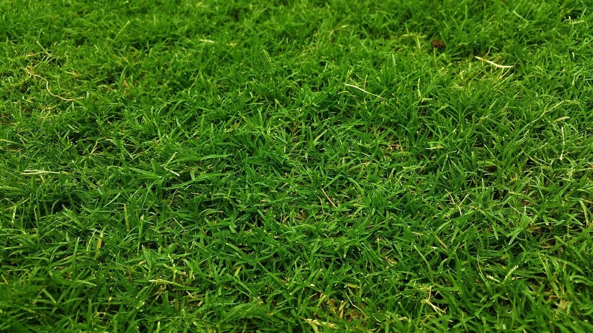

Tennis at Gymkhana
Professional courts and community programs for all skill levels

Our Tennis Courts
The Chiang Mai Gymkhana Club maintains several professional-grade tennis courts in excellent condition. Our courts are available year-round, and the tropical climate provides ideal conditions for tennis throughout the season. Whether you are a beginner learning the game or an experienced player seeking regular competitive play, our facilities welcome you.
The courts are well-lit for evening play, and our grounds crew maintains them to competition standards. Members and guests enjoy convenient access during club hours, with flexible booking available through the office.

Coaching & Instruction
Professional tennis coaching is available for members at all levels. Our instructors work with beginners to establish proper fundamentals, and provide advanced coaching for experienced players seeking to improve their competitive game.
Group coaching and individual lessons can be arranged through the club office. Regular coaching accelerates improvement and helps players develop the confidence and skills to enjoy tennis more fully.

Club Championships & Competitions
The Chiang Mai Gymkhana Club hosts club championships annually in September and October, featuring a feed-in system that allows all members to participate in competitive tennis regardless of skill level. Members advance through the bracket at their own pace, playing challenging matches while enjoying the competitive spirit of club tennis.
Beyond the championship, the club organizes friendly matches, challenge matches against other clubs, and mixed doubles events throughout the year. These competitions foster camaraderie and provide members with regular opportunities to test their skills in a supportive club environment.
Competitive Tennis
Club championships are held in September and October every year with a feed-in system so everyone gets competitive tennis. This inclusive format allows members of all skill levels to participate in organized competition while finding opponents at their level.
Challenge matches against other clubs (local and regional) are also arranged on an ad hoc basis, providing opportunities to test your skills against players from other facilities and strengthen the broader tennis community in northern Thailand.
Professional Tennis Coach
Coach Anne (Nipada Kaewborish), an ex-Thailand tennis star and former member of Thailand's Fed Cup team, spends most of her time teaching at the Gymkhana Club and the 700 Year Stadium in Chiang Mai. She is dedicated to teaching the young hopefuls of Chiang Mai the finer points of the game, providing expert instruction for players of all levels.
Whether you are seeking to develop your fundamentals or refine advanced techniques, Coach Anne brings championship-level expertise to her teaching. Her experience competing at the highest levels of international tennis ensures that her coaching reflects current techniques and strategic understanding of the game.
Contact Coach Anne: 092-695-5654
Tennis Details
Message from the Tennis Captain
Welcome to the oldest tennis club in Chiang Mai. Our aim is to carry on the same tradition as the Founding Members in 1898, which is to promote the game of tennis and provide a high standard of both competition and sportsmanship. The recently upgraded courts and the addition of floodlights provide a first-class facility for both experienced players and those new to the game.
We are particularly keen to encourage the young people of Chiang Mai to join us and strengthen our group, ensuring the proud traditions of Gymkhana Club tennis endure. – Ian Carr, Tennis Captain
Fees
- Club members: Free
- Guest playing with a member: 80 Baht per court per hour
- Visitors: 120 Baht per court per hour
- Lighting: 40 Baht per court per hour
Court Information & Booking
Number of Courts: 2 courts open daily from 7 a.m. to 9:00 p.m. (Last booking 8:00 p.m.)
Bookings: Tel: Club office 053-241035
Booking Rules:
- Only one booking can be made at a time for a maximum of 1 hour
- Only when the match has finished can a booking be made for another time
- A court booking is only legitimate if two persons show up to play within ten minutes of the booking time
- From 4:30 p.m. to 7:00 p.m. Tuesday to Friday, both courts are reserved for members and their guests only
- Organized club events take precedence over individual bookings. Check the notice board for club events
Dress Code
Players must dress appropriately. Only heelless soft-soled running shoes are permitted on the courts.
Squash at Gymkhana
History & Heritage
The first squash court, made entirely from teak, was erected in 1898 at the Chiang Mai Gymkhana Club in the first year of the organization's existence. Sadly, the court was demolished in 1985 after some 90 years of use. The first squash competition conducted at the Chiang Mai Gymkhana Club was held in 1911 and known as the Lowe Cup, establishing a tradition of competitive squash that continues to this day.
Squash Committee
Bob Molloy
Email: bob.chiangmai@gmail.com
Phone: 081 0207667
Squash Information
Fees:
- Members: Free
- Non-member: 120 Baht per hour
- Non-member with member: 120 Baht
Courts & Facilities:
- 2 courts with balcony viewing
- Both courts have ceiling fans
- Rackets for hire (available from Club Office)
- Squash balls occasionally available (recommended to bring your own)
Booking System: No booking system – just turn up and play. If there is a queue, play 3 sets only, then rotate.
Scoring System: Best of 3 or 5 sets up to 11 points, every rally counts.
Regular Meeting Times: Tuesdays, Thursdays, and Saturdays from approximately 4:30 p.m. onwards. Current membership: approximately 10-15 players, both members and non-members.
Important Note: Shoes must be non-marking.
Facilities Access: Both before and after playing, non-members and visitors are very welcome to use the Gymkhana Club's facilities (changing rooms, showers, veranda area, restaurant, etc.) except for the Members Only bar inside the clubhouse.
Bookings: Tel: Club office 053-241035
Club Facilities
International Restaurant and Bar – available for functions
Snooker/billiards room and library – members only
Golf shop, locker room – convenient access for all sports activities
Available for hire: caddies, golf clubs, tennis and squash rackets
Start Playing Tennis at Gymkhana
Join our tennis community and enjoy year-round play in the heart of Chiang Mai
Get In Touch